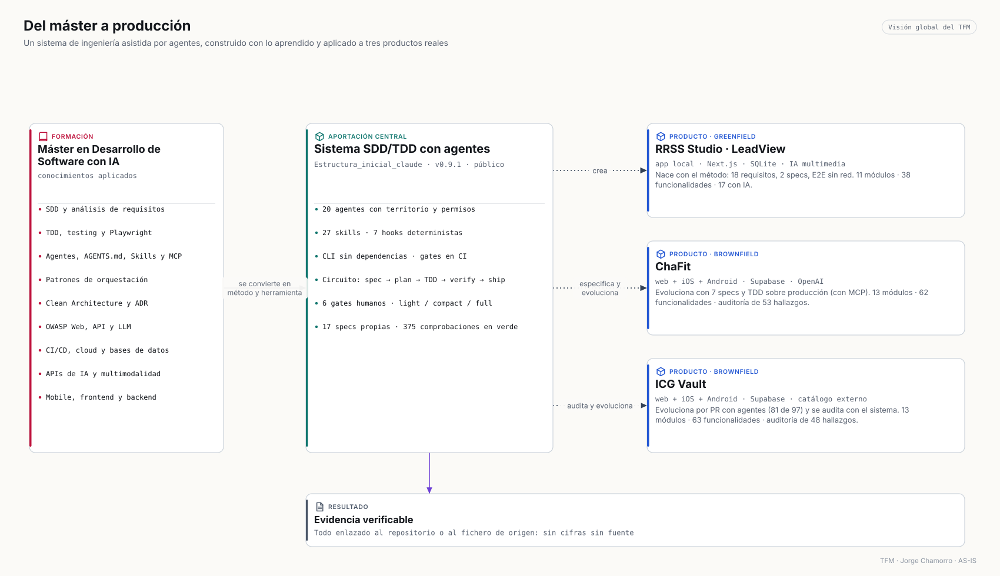

Saltar al contenidoTrabajo de Fin de Máster · Desarrollo de Software con IA · 2026 · Jorge Chamorro
Del máster a producción
Un sistema de ingeniería de software dirigido por especificaciones, con 20 agentes de IA, TDD y verificación fuera del modelo, construido con lo aprendido en el máster y usado de verdad para crear, evolucionar y auditar tres productos: RRSS Studio, ChaFit e ICG Vault.
56vistas de arquitectura generadas desde el código

Visión global: el máster se convierte en método y herramienta; la herramienta se aplica a tres productos.Leer la visión general →
§01
El problema
Los agentes escriben deprisa. Sin método, esa velocidad se paga.
Lo he sufrido en mis propios productos, nacidos con IA en un generador low-code y crecidos a base de chat.
Autocertificación
El mismo agente planifica, implementa y se da por bueno
Un «funciona» que nadie ha ejecutado.
Contratos implícitos
La IA devolvía 7 u 8 columnas; la app esperaba 9
317 filas de rutinas desplazadas en producción en ChaFit.
Sin rastro
Nadie sabe por qué se decidió algo
Migraciones aplicadas desde el panel que ya no coinciden con el repositorio.
Seguridad al final
Permisos demasiado amplios en la capa de datos
Las auditorías de ChaFit e ICG Vault encontraron 15 y 16 hallazgos críticos.
§02
La solución
La spec manda, el test demuestra y la persona decide.
Un kit que se instala con un comando en cualquier repositorio y gobierna a los agentes de Claude Code, Copilot, Cursor, Codex, Gemini CLI y Antigravity.
01
Especificación primero
Ningún código sin spec aprobada: requisitos EARS, criterios Gherkin, impactos de seguridad y usabilidad.
02
TDD con el rojo a la vista
RED demostrado → GREEN mínimo → REFACTOR. «Pasa» sin ejecución no es un resultado.
03
Verificación fuera del modelo
Hooks y una CLI determinista comprueban territorio, trazas, secretos, cobertura y gates.
04
Seis gates humanos
Producto, arquitectura, spec, diseño, plan y entrega. La máquina propone; la persona decide.
Diez fases, seis puertas y tres niveles de circuito.
Cada fase deja en el repositorio el artefacto que necesita la siguiente. El nivel —light, compact o full— lo decide la ruta del cambio, nunca el agente, y ninguno se salta los controles.
Evidencia literal de la spec 001 de ChaFit (09/08/2026): contrato de tablas de entrenamiento con migración de reparación, respaldo y rollback, aplicada por MCP.
# chafit360 · docs/specs/001-workout-table-contract/evidence.md
18:25 T-001-01 deno test workout-plan.test.ts RED 0 passed · 4 failed
18:27 T-001-01 deno test workout-plan.test.ts GREEN 4 passed
18:34 T-001-03 aserción de filas (MCP) RED 317 filas ≠ 9 celdas
18:41 T-001-03 migración + 2.ª pasada + rollback GREEN 0 inválidas · idempotente
18:50 T-001-04 deno test/check + despliegue MCP GREEN 7 tests · v22 / v6 activas
# post-migración
437/437 filas con 9 celdas · 0 discrepancias frente al respaldo
Entrega: NO-GO← gates de seguridad heredados, declarados, no ocultos
§04
Sistema de agentes
Veinte agentes. Solo tres delegan. Quien juzga no escribe.
Orquestación, fases y especialistas con profundidad máxima de dos saltos. Los auditores son de solo lectura y los hooks —no el modelo— registran qué ocurrió realmente.
Bloquean secretos y comandos destructivos; piden permiso para push, commits e infraestructura.
Trazas
observed ≠ declared
execution-log.jsonl append-only escrito por el host; la CI contrasta los trailers de commit con la base exacta.
Portabilidad
Seis entornos, un contrato
Perfiles escritos una vez en .claude/agents y adaptados a Copilot, Cursor, Codex, Gemini CLI y Antigravity.
§05
Aplicación real
Tres productos, tres formas de usar el sistema.
Un producto nuevo que nace con el método, uno en producción evolucionado con specs y TDD, y uno grande evolucionado por agentes y auditado con el sistema.
Greenfield · app local
RRSS Studio · LeadView
Analiza tu app desde su URL y su código, estudia a tu competencia, encuentra clientes y produce vídeos verticales con IA, con el coste a la vista antes de gastar.
11módulos
38funcionalidades
17con IA
11integraciones
Problema
Publicar una app es la mitad del trabajo: entender el producto, el mercado y producir contenido requiere un equipo de marketing.
Relación con SDD
El primer commit es la especificación: 18 requisitos, diseño y arquitectura aprobados antes del código. Kit SDD 0.9.1 instalado; spec 002 con E2E sin red ni créditos. Hoy: 71 + 138 tests en verde.
Clientes, entrenadores y gimnasios en una sola plataforma: rutinas y dietas generadas con IA, ejecución guiada, la ilustración de tu propia máquina, foto al plato y paneles por rol.
13módulos
62funcionalidades
12con IA
9integraciones
Problema
El entrenamiento personal está fragmentado entre PDF, hojas de cálculo y chats; el entrenador no ve lo que pasa entre sesiones y el gimnasio no ve a su equipo.
Relación con SDD
7 specs con TDD sobre producción (contrato de tablas, miniaturas, observabilidad, variantes, entrada multimodal, cambio de ejercicio, navegación), migraciones con respaldo y rollback, despliegue por Supabase MCP. Hoy: 109 + 100 tests en verde.
Vota películas, series y videojuegos con un voto que pesa más cuanto más nivel tienes; colecciona, personaliza tu perfil con IA y juega cada día.
13módulos
63funcionalidades
4con IA
12integraciones
Problema
Las notas están repartidas en plataformas distintas, todos los votos valen lo mismo y no hay motivos para volver cada día.
Relación con SDD
81 de 97 PR desde ramas de agentes, revisadas y fusionadas por el autor; auditoría integral obtenida con el modelo SDD (48 hallazgos, plan por fases pendiente de aprobación). Sin specs todavía: la auditoría es su puerta de entrada.
Quién llama a quién, para qué y con qué credencial.
32 integraciones externas en ejecución entre los tres productos. Ninguna clave de pago llega al cliente: viven en Edge Functions o en un Vault cifrado.
Orquestador y especialistas de solo lectura —con consultas de solo lectura a la base real por MCP— produjeron dos auditorías integrales. Correcciones pendientes
ChaFit · 23/09/2026
53 hallazgos · 15 críticos
Seguridad 15 · base de datos y Edge Functions 13 · calidad 9 · UI y accesibilidad 16. Plan en seis specs (008–013) pendiente del gate humano.
ICG Vault · 23/09/2026
48 hallazgos · 16 críticos
Seguridad 25 · calidad y rendimiento 16 · UI y accesibilidad 7. Plan por fases con rollback escrito antes de cada cambio.
Solo se publican recuentos y categorías OWASP; los informes completos son privados porque describen sistemas con usuarios reales. Metodología
§09
Relación con el máster
Del temario a la evidencia.
54 competencias del programa revisadas: 46 aplicadas, 5 parciales y 3 no aplicadas, cada una con su evidencia o con el motivo.
Ingeniería
SDDRequisitos EARSCiclo de vidaADRClean Architecture (parcial)
Calidad
TDDPlaywrightSentryOWASP · JWTDocs as CodeCobertura (trinquete)
Agentes e IA
AGENTS.mdSkillsMCPOrquestaciónAPIs de IAMultimodalidad
Herramientas
ClaudeCodexCopilotCursorLovablen8n
Infra y seguridad
CI/CDCloud (Vercel, Supabase)Bases de datosOWASP Web · API · LLM